Lobby et salons
Lobby de 70 m², escalier en chêne, deux salons.
Diemeringen · Alsace · Vosges du Nord
Une villa de 1 000 m² au cœur de l’Alsace, avec piscine intérieure chauffée, pour réunir jusqu’à 50 personnes : cousinades, fêtes, associations, séminaires.
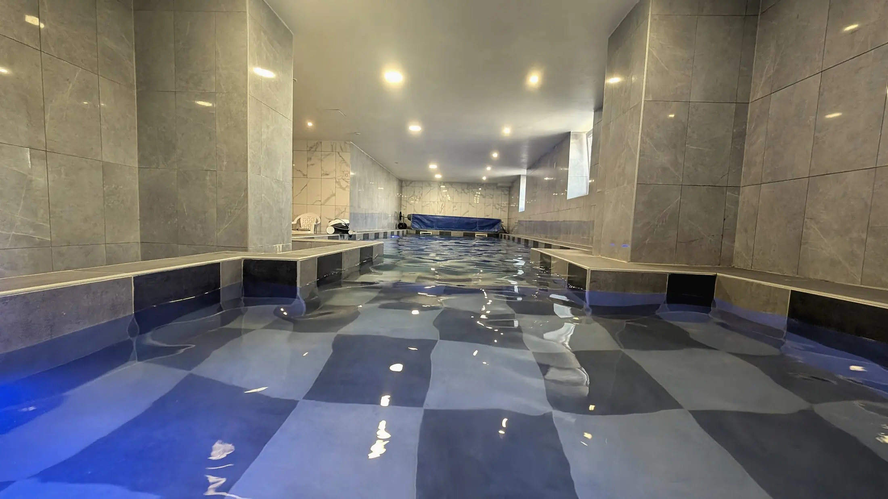
Piscine chauffée toute l’année

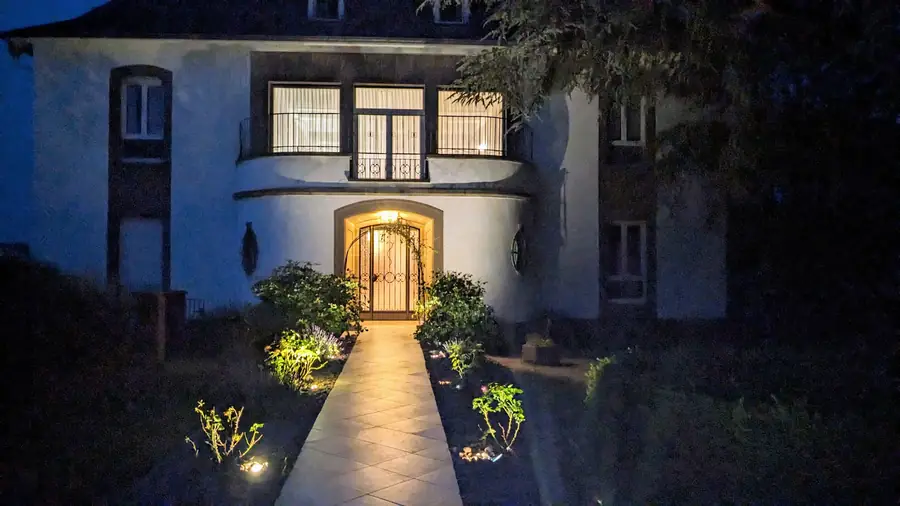
Chaque groupe vit la maison à sa façon. Choisissez la vôtre.

Trois générations sous le même toit pour un week-end, avec de la place pour chacun et une piscine qui met tout le monde d’accord.

Deux salles à manger, une cuisine professionnelle pour votre traiteur et des jardins pour les photos.

Jusqu’à 50 personnes logées ensemble, des espaces de jeu et une salle de cinéma pour les soirées.

Salle de réunion, salle de projection de 40 places et un cadre au calme pour vos séminaires.
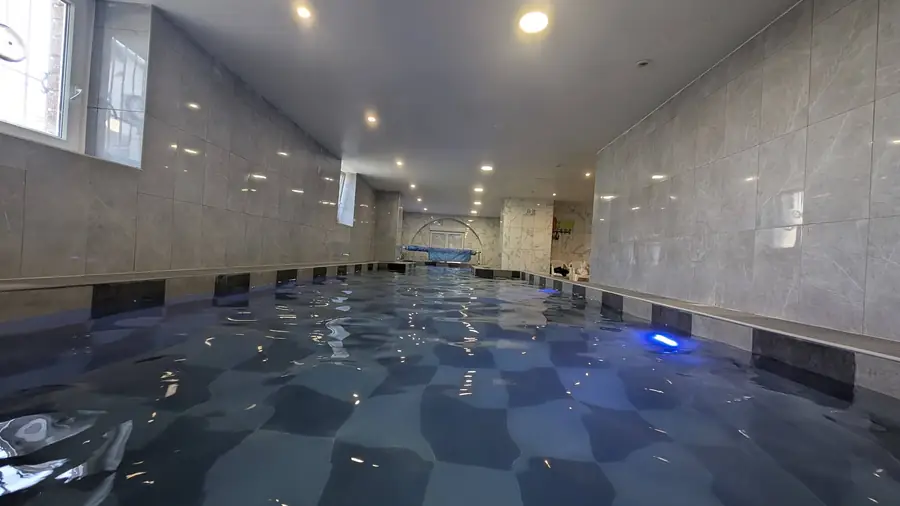
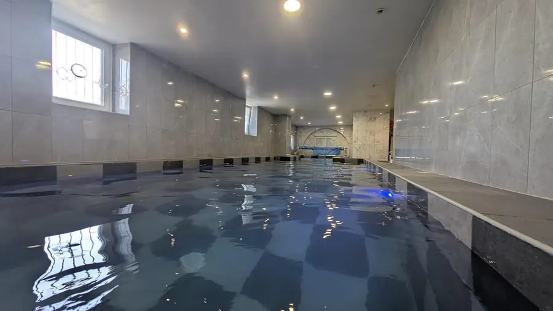
Au sous-sol de la villa, un bassin intérieur chauffé vous attend quelle que soit la saison. Les grands nagent, les petits barbotent dans leur pataugeoire, et tout le monde se retrouve autour de l’eau. C’est l’équipement que nos hôtes citent en premier.
Pour la sécurité des enfants, le local piscine se ferme à clé et s’utilise sous la surveillance d’un adulte.
Construite en 1947, la villa déploie ses volumes sur quatre niveaux. Le lobby de 70 m² et son escalier en chêne accueillent votre groupe dès l’arrivée ; les salons, les deux salles à manger et les deux cuisines permettent de vivre ensemble sans jamais être à l’étroit.
Lobby de 70 m², escalier en chêne, deux salons.
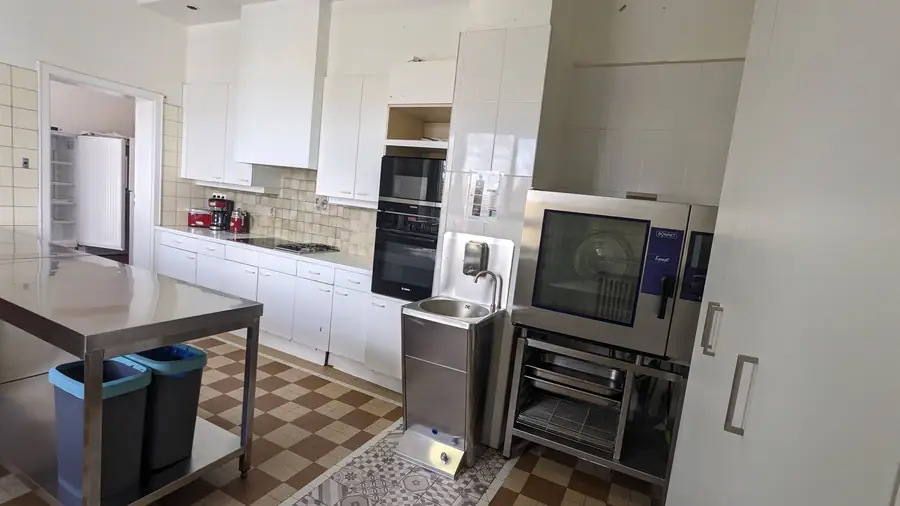
Dont une professionnelle, idéale pour un traiteur.

Deux salles lumineuses pour les grandes tablées.

40 places, billard, ping-pong, baby-foot.

Terrasse couverte, four à bois, barbecue, brasero.

4 000 m², tennis, basket, aires de jeux.
Des chambres doubles aux grandes chambres familiales, réparties sur trois étages. Chaque chambre dispose de sa salle d’eau ou partage une salle de bain avec sa voisine.


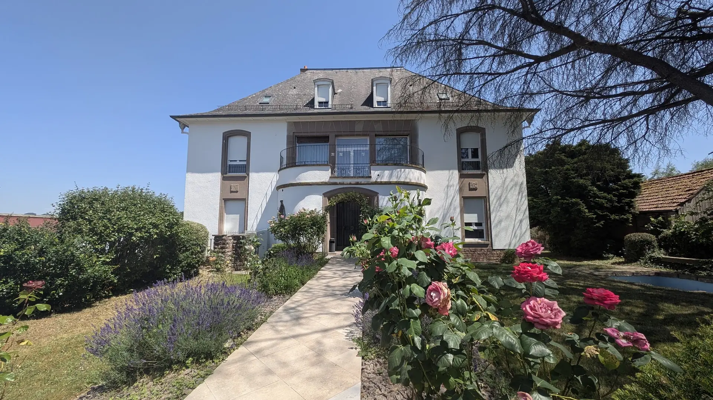
Roses, pelouses et grands arbres entourent la maison. On déjeune tous ensemble sur la terrasse, on allume le four à bois pour les tartes flambées, et les soirées se prolongent autour du grand brasero.
Diemeringen est un village d’Alsace Bossue, dans le Parc naturel régional des Vosges du Nord, réserve de biosphère de l’UNESCO, tout près de la frontière allemande. Le centre du village est à 500 m, la gare à 800 m, le supermarché à 1 km.
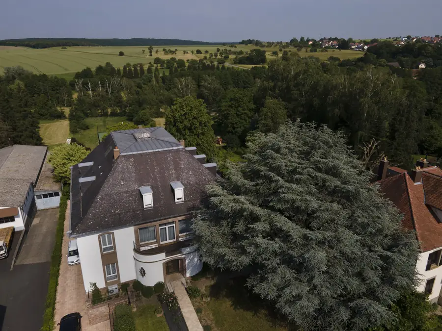
Un carnet de sorties complet est remis à nos hôtes.
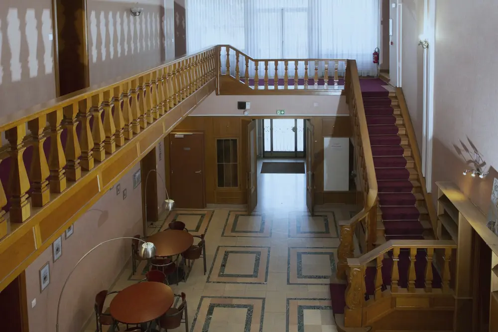
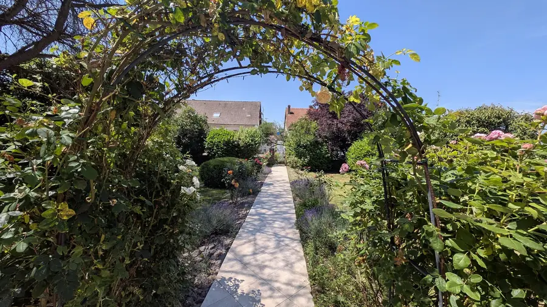
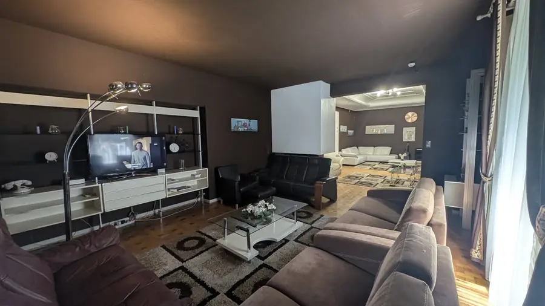
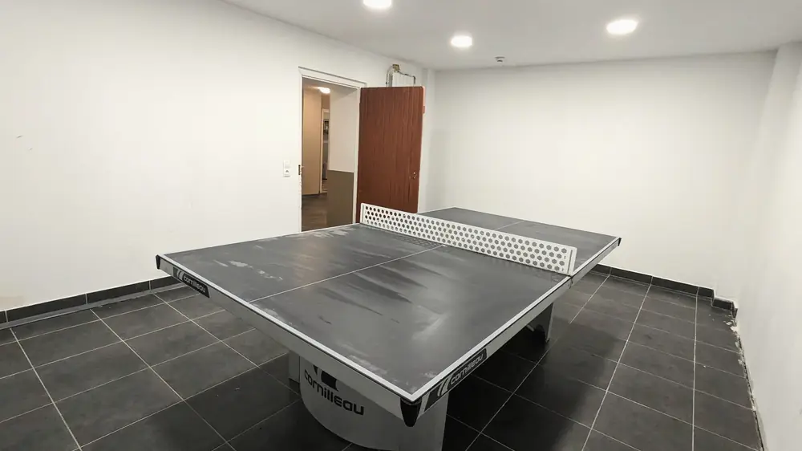
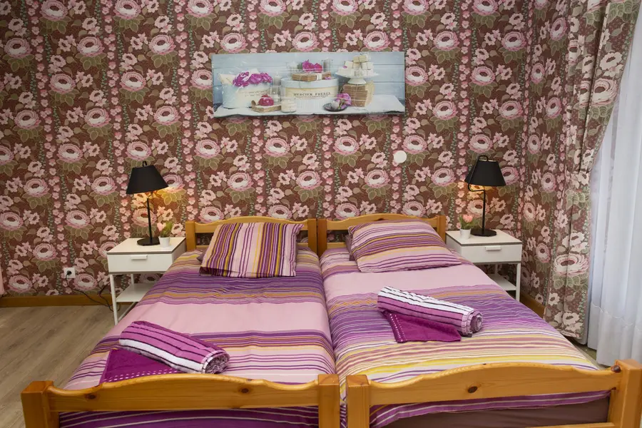
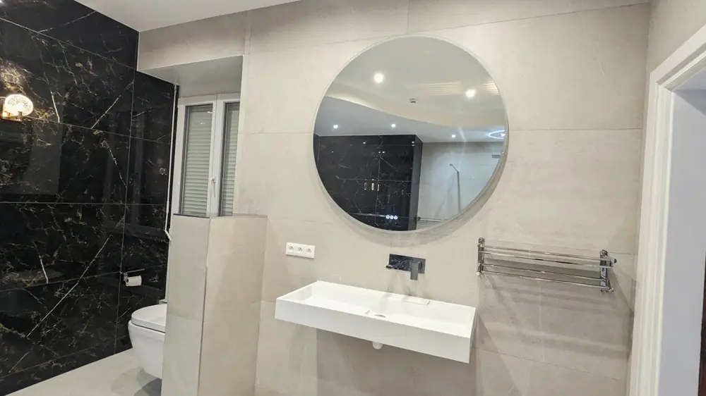
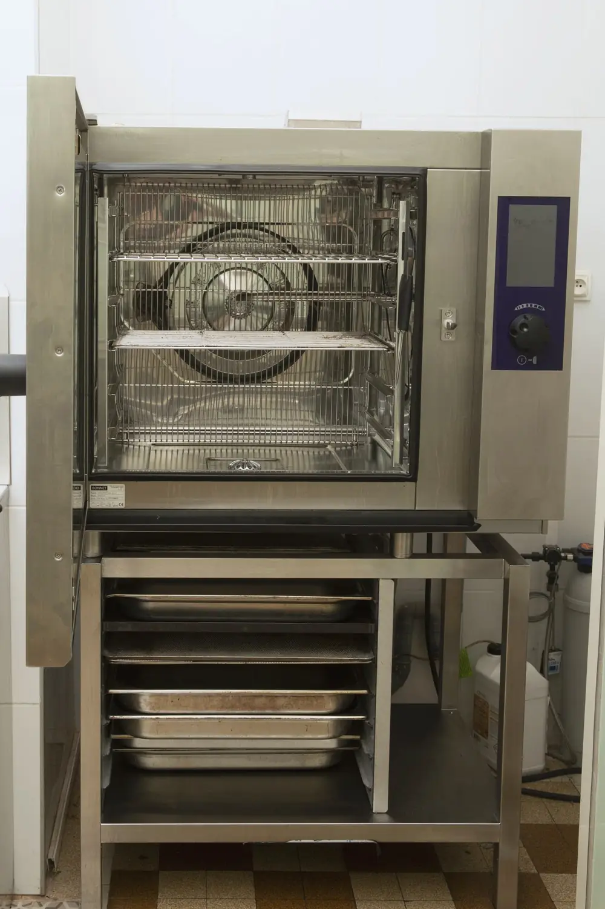


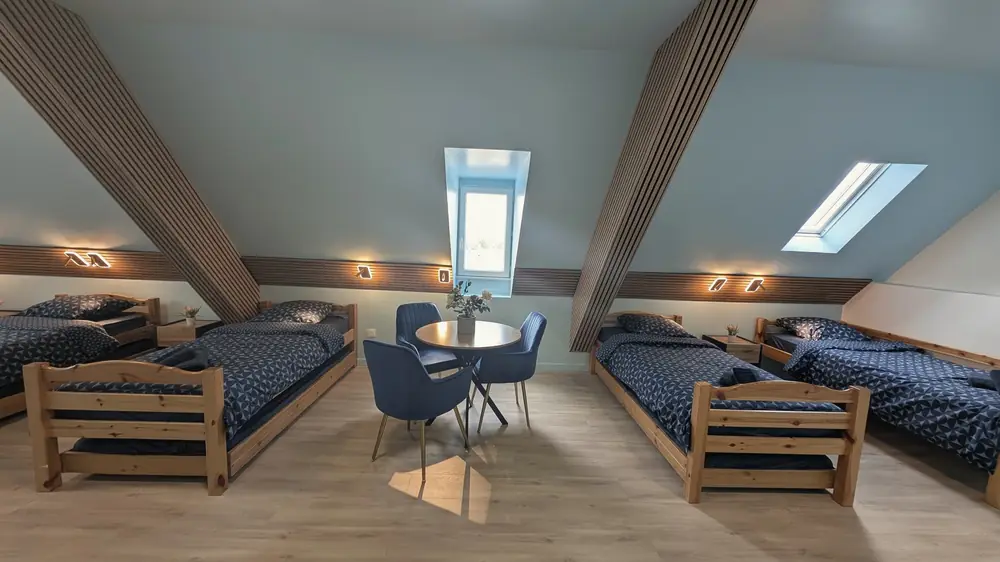
Indiquez vos dates et votre groupe : le propriétaire vous répond personnellement avec la disponibilité et le tarif.
Une demande ne vaut pas réservation : le séjour est confirmé par le propriétaire.